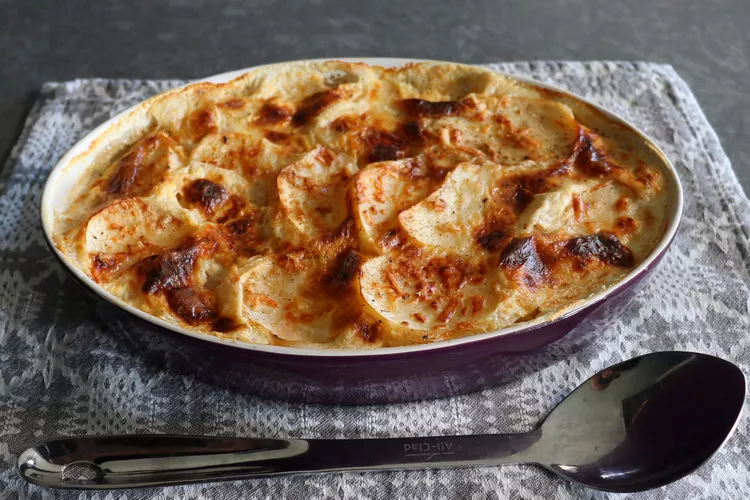

Home
Photo:

Description:
The author likes to talk about how much he likes his mother;s scalloped potatoes,
and - shocking, I know - I also agree. Mom's make fantastic scalloped potatoes.
One of my favorite dishes my mom makes is scalloped potatoes and ham.
Ingredients:
- 2 tablespoons unsalted butter, at room temperature
- 3 large russet potatoes, or more to taste
- kosher salt and freshly ground black pepper to taste
- 1 pinch cayenne pepper, or to taste
- 3/4 cup grated sharp white Cheddar cheese
- 3 1/2 cups whole milk
Directions:
- Preheat the oven to 400 degrees F (200 degrees C).
Grease a 2-quart casserole dish with 2 tablespoons
butter and set aside.
- Peel potatoes and cut at a 45-degree angle into
1/4-inch thick round slices.
- Arrange 1/3 of the potato slices in an even layer
in the bottom of the prepared dish. Season the layer
very generously with salt, and sparingly with the
freshly ground black pepper, and cayenne, if using.
Top evenly with 1/3 of the Cheddar cheese. Repeat
this process two more times for a total of three
layers of potatoes, except for the last third of the
cheese. Slowly and carefully pour in the milk, without
upsetting the layers. The milk should almost, but not
quite, cover the potatoes.
- Top with remaining Cheddar cheese and place the casserole
dish on a sheet pan to catch any drips.
- Bake in the center of the preheated oven until potatoes
are tender and the top is well browned and bubbling,
about 1 hour and 15 minutes. Let rest for 10 minutes before serving.